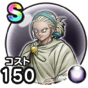

プッチ
災厄の目覚めスキルの斬撃・体技ダメージ+7%混乱耐性+10%攻撃減耐性+10% / 9.0点
くわしい特徴
【ランク特殊効果】 スキルの斬撃・体技ダメージ+9%会心率+3%混乱耐性+10%攻撃減耐性+10%スキルの斬撃・体技ダメージ+7%混乱耐性+10%攻撃減耐性+10%スキルの斬撃・体技ダメージ+5%混乱耐性+7%攻撃減耐性+7%スキルの斬撃・体技ダメージ+3%混乱耐性+5%攻撃減耐性+5%混乱耐性+3%攻撃減耐性+3%-

災厄の目覚めスキルの斬撃・体技ダメージ+7%混乱耐性+10%攻撃減耐性+10% / 9.0点
【ランク特殊効果】 スキルの斬撃・体技ダメージ+9%会心率+3%混乱耐性+10%攻撃減耐性+10%スキルの斬撃・体技ダメージ+7%混乱耐性+10%攻撃減耐性+10%スキルの斬撃・体技ダメージ+5%混乱耐性+7%攻撃減耐性+7%スキルの斬撃・体技ダメージ+3%混乱耐性+5%攻撃減耐性+5%混乱耐性+3%攻撃減耐性+3%-